Crêpes
Introduzione e contesto
Sì, certo: Bretagna e Normandia.
Luce, vento, nuvole basse che sembrano uscire da un quadro di Magritte, quasi da toccare.
Sono casa mia.
L’estate, la campagna, una cucina semplice ma piena di cose vere: uova del pollaio vicino, farina buona, limoni non trattati, latte appena munto e bollito in casa, burro fresco.
Quello che una volta era normale, oggi è diventato straordinario.
Questa è la base.
Quella che si faceva senza pensarci troppo, ma che funzionava sempre.

Ingredienti
| Ingrediente | Quantità | Unità | Note |
|---|---|---|---|
| Uova | 4 | uova | allevate a terra |
| Farina di frumento 00 | |||
| Burro | 50 | g | molto fresco |
| Latte intero | qb | (anche senza lattosio) | |
| Acqua | qb | ||
| Sale | qb | ||
| Zucchero di canna | qb | chiaro e ben macinato | |
| Limone | 1 | BIO e non trattato (si usa la buccia) |
Preparazione
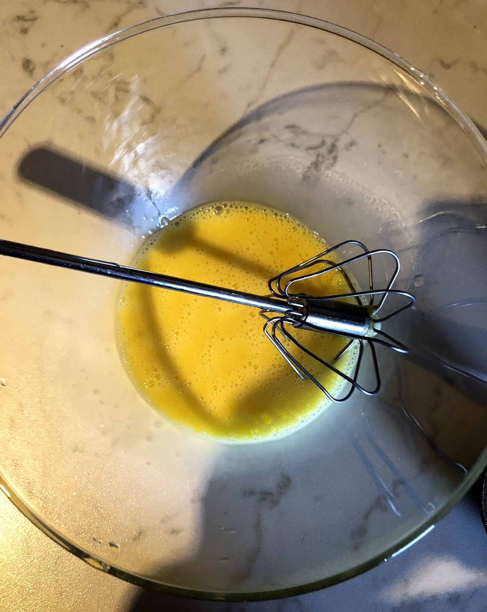
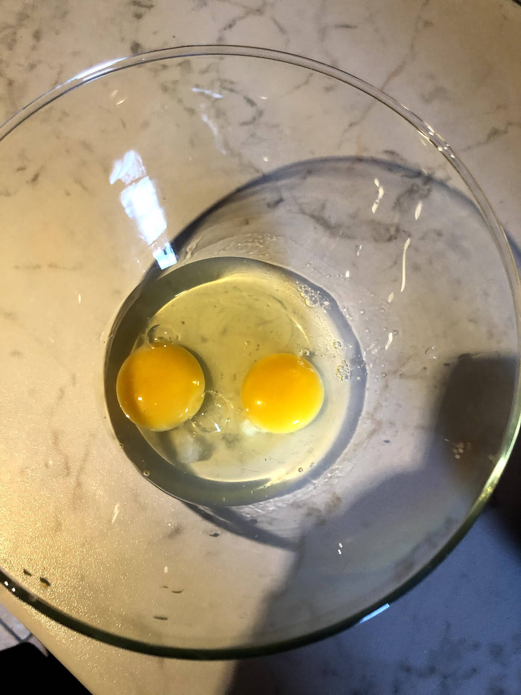
Sbattere a lungo le uova sino ad avere un composto omogeneo di bianco e rosso. Aggiungere poco alla volta la farina che prima sbattete con la frusta, poi impastate con il cucchiaio, sino ad avere un impasto che tiene, io da ragazzo lo chiamavo "gomma da masticare".
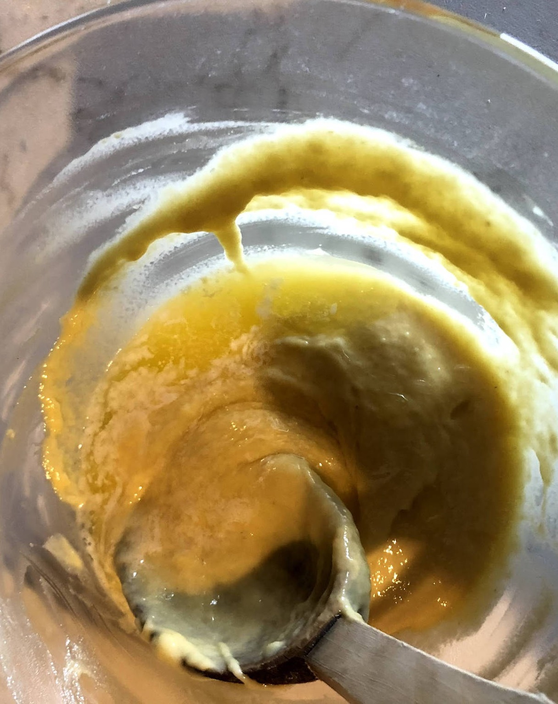
Impastare a lungo, in modo che non vi siano più eventuali grumi. Proprio la lavorazione li distrugge. Aggiungere una noce di burro fusa delicatamente ed inglobare. La densità non dovrebbe cambiare di molto, salvo essere un poco più elastica. Aggiungere in parti uguali acqua e farina molto lentamente (e non gelate) mescolando perché il tutto si amalgami lentamente, senza formare grumi per la fretta.
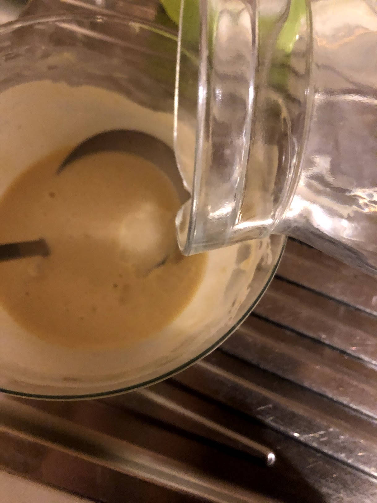
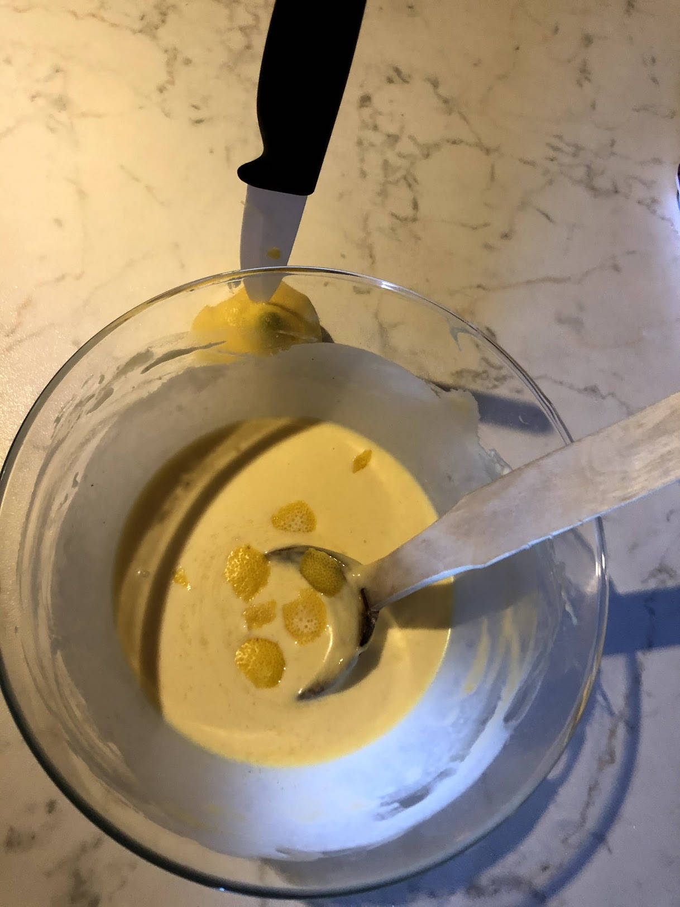
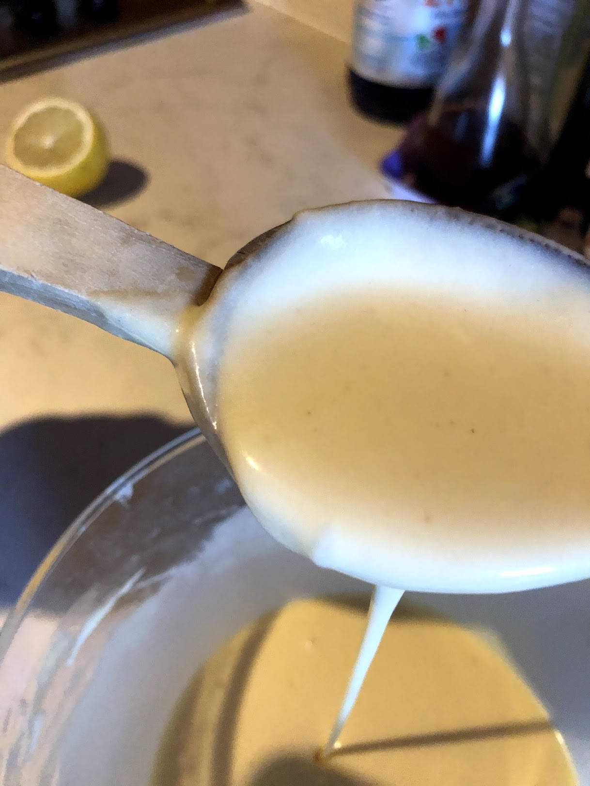
Il risultato finale dovrà essere una pastella che possa colare ma non gocciolare. Aggiungere un pizzico di sale e alcune scorze di limone. Lasciare riposare diverse ore al fresco. Il giorno dopo saranno al top. Il riposo permette alla farina di continuare l'idratazione, infatti vedrete che la pastella si sarà notevolmente addensata e necessiterà di ulteriore diluizione.
Più liquida sarà, più potranno essere sottili. Questioni di gusto. La padella, va bene quella che preferite. Una colta avevo una padella in ferro dedicata solo a questo. Consentiva delle sottili bruciature, forse non consigliabili, ma una volta apprezzate. Il fondo va preparato con un poco di burro. Non si tratta di dare gusto, ma solo permettere un minimo di lubrificazione della superfice.
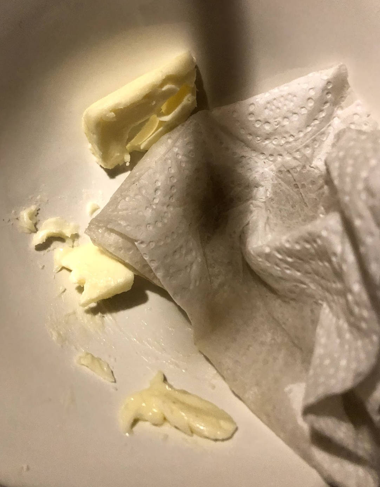
Io poi passo sempre panno di carta per togliere eventuali eccessi. Versare con il mestolo la pastella (a temperatura ambiente) a giri concentrici per distribuire un velo su tutta la superfice ruotando ed inclinando la padella per riempire le lacune. Io le preferisco quando restano molto sottili, ma non come quelle secche che vendono agli angoli delle strade in Francia. Quando ha preso consistenza e sotto appare appena colorato, rivoltare al salto (più che bravura è una questione di padella) e continuare la cottura.
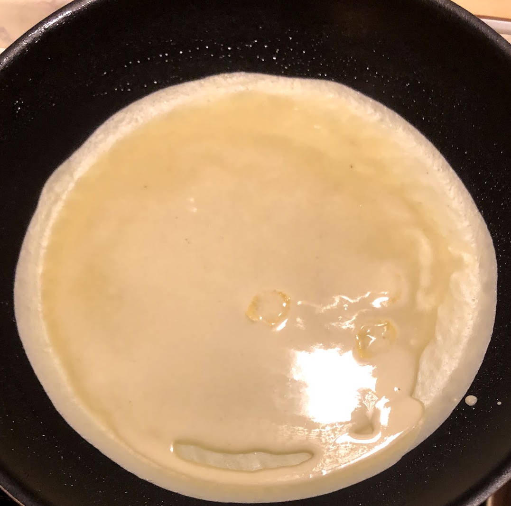
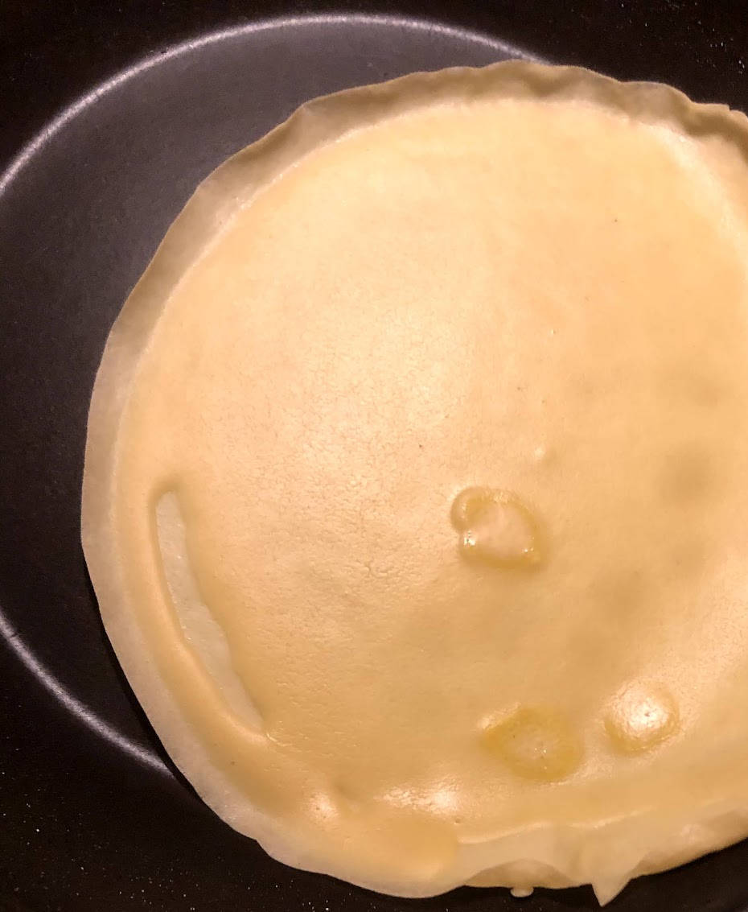
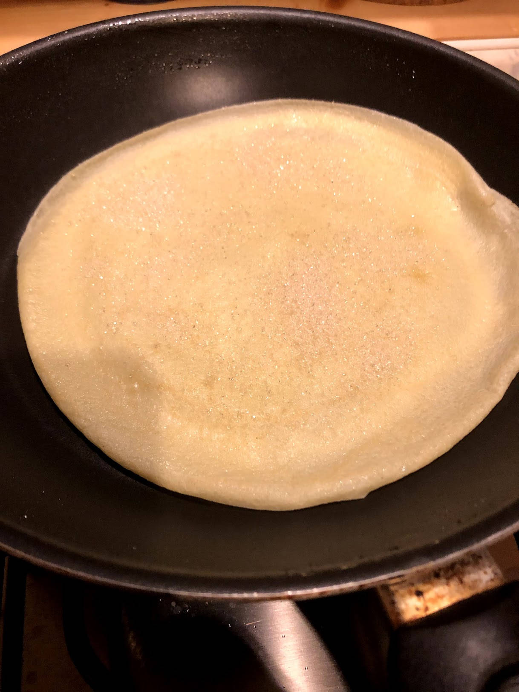
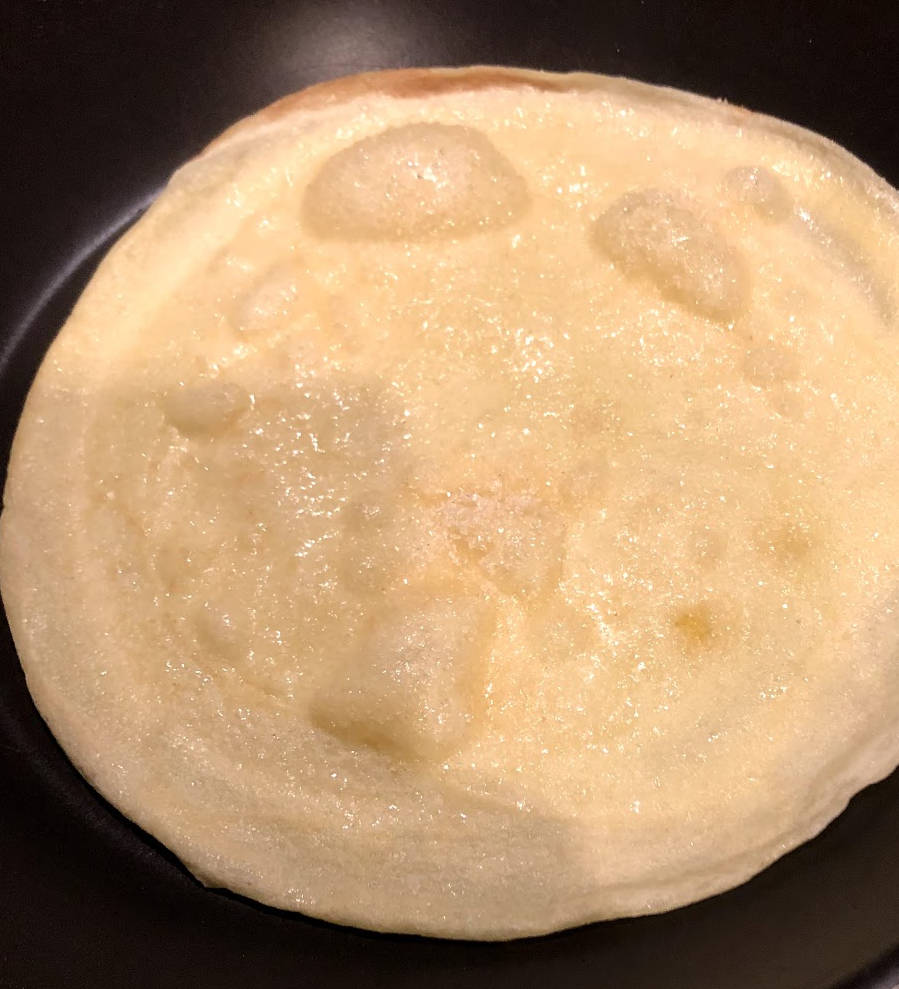
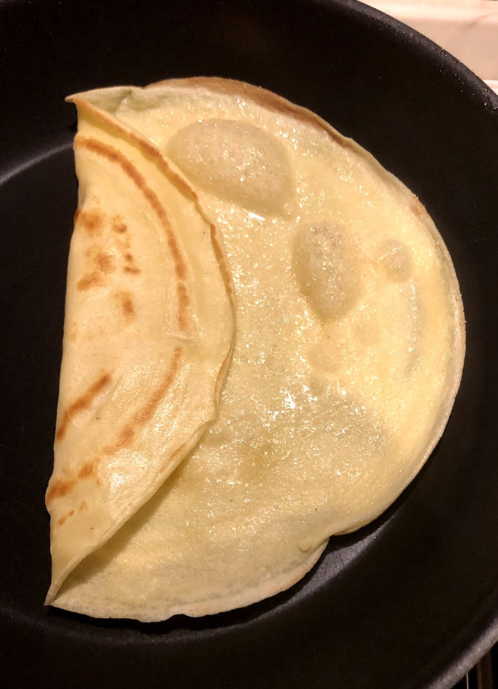
Se non riesce, va benissimo una paletta sottile. Non dovrebbero esserci problemi staccare dalla padella, facilmente l'aria l'ha staccata per conto suo gonfiandola. Nella ricetta base aggiungere zucchero sulla superfice (se pensate di farle salate, ovviamente NO, neppure se pensate a farciture. Quando comincia a prendere un colore ambrato scuro e lo zucchero si è sciolto, arrotolare, o piegare a spicchi e servire caldo in piatto con un altro cucchiaino di zucchero.
Note e osservazioni
- Sono indicati tempi di riposo: rispettarli aiuta struttura e sapore del piatto.
- Indicazione di tempo presente nel testo: 20 minuti + cottura
- Il riposo è fondamentale: senza, la pastella è meno stabile e meno elastica.
- La padella conta più della tecnica: quando è giusta, le crêpes si staccano da sole.
- Il burro serve solo a lubrificare, non a dare sapore.
- Lo zucchero deve appena caramellare, non bruciare.
Si può poi fare tutto:
Nutella, Suzette, Grand Marnier, banane e rum, versioni salate…
Ma questa è la base.
Quella di casa mia.
{kind=link}